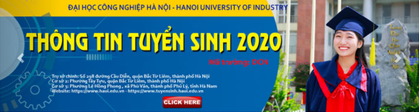
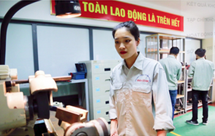

Sinh ra và lớn lên ở vùng quế thuần nông thôn Thọ Đa, xã Kim Nỗ, huyện Đông Anh (Hà Nội), Nguyễn Thị Trà (sinh năm 1998) luôn chăm chỉ học tập và 12 năm liền là học sinh giời. Những năm tháng còn là học sinh, Trà ấp ủ ước mơ thi vào một trường đại học chyển ngành cơ khí. Giờ đây, khi ước mơ đã thành hiện thực, Trà nhớ lại: “Khi chọn trường đại học để làm hồ sơ dự thi, em được người thân giới thiệu về Trường đại học Công nghiệp Hà Nội. Em rất hào hứng và mong ước được học ở ngôi trường này, vì nghe nói môi trường học tập và rên luyện về cơ khí, chế tạo ở đầy có chuyên môn cao. Tuy nhiên, điều băn khoăn lớn nhất của em là ở đây hầu hết là các bạn nam".
Năm 2016, Trà thi đỗ vào Trường đại học Công nghiệp Hà Nội, Khoa Cơ khí, ngành học cơ khí chế tạo máy. Đúng như lo lắng của em, cả lớp có 70 sinh viên thì mỗi mình em là con gái. Sau này tìm hiểu thêm, Trà mới biết, thậm chí cả khóa học năm ấy, cũng chỉ có mỗi em là con gái làm hồ sơ đăng ký dự thi vào trường. Tuy nhiên, không vì thể mà bị phân tâm, em nhanh chống quen trường, lớp và bị cuốn hút bởi nền nếp học tập nghiêm tác của các bạn và các bải giảng chuyển sâu của giảng viên. Đồ cũng là lý do đưa em đến với nghiên cứu khoa học. Ngay trong năm học đầu tiên, Trà bắt đầm tham gia nghiên cứu khoa học với để tài: “Nghiên cứu, tính toán, thiết kể máy đánh bông kim loại". Bằng nỗ lực của bản thân và các bạn trong nhôm nghiên cứu, để tài đã đoạt giải khuyến khích của trường. Trà cũng nhiệt tình tham gia hoạt động đoàn từ năm học đầu tiên. Là thành viên nữ duy nhất của lớp ham mề nghiên cứu khoa học, Trà luồn được thầy Bí thư Đoàn của khoa hướng dẫn, giúp đở tận tình.